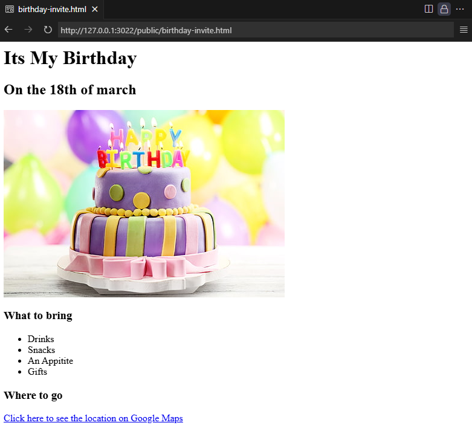
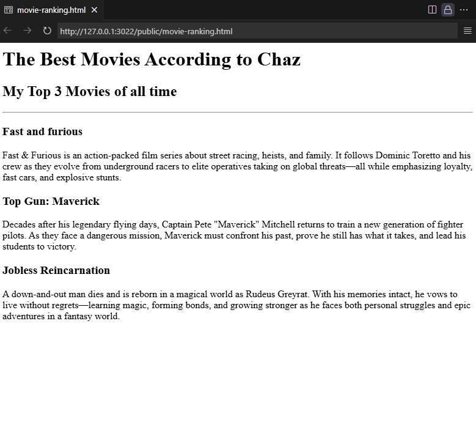
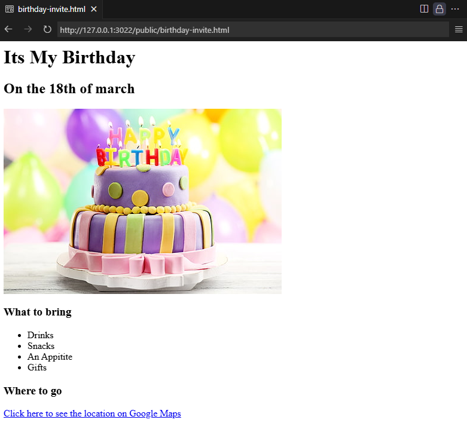
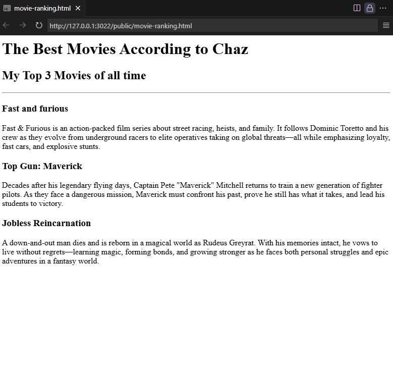

Project 1: Birthday Invite
A fun birthday invitation page.
 View ProjectProject 2: Movie Ranking
A list of my top 3 Favourite movies.
 View ProjectA fun birthday invitation page.
 View ProjectA list of my top 3 Favourite movies.
 View Project